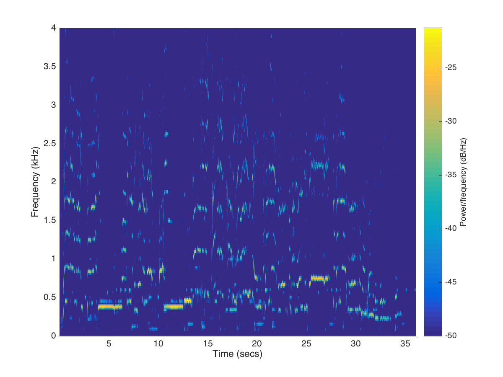
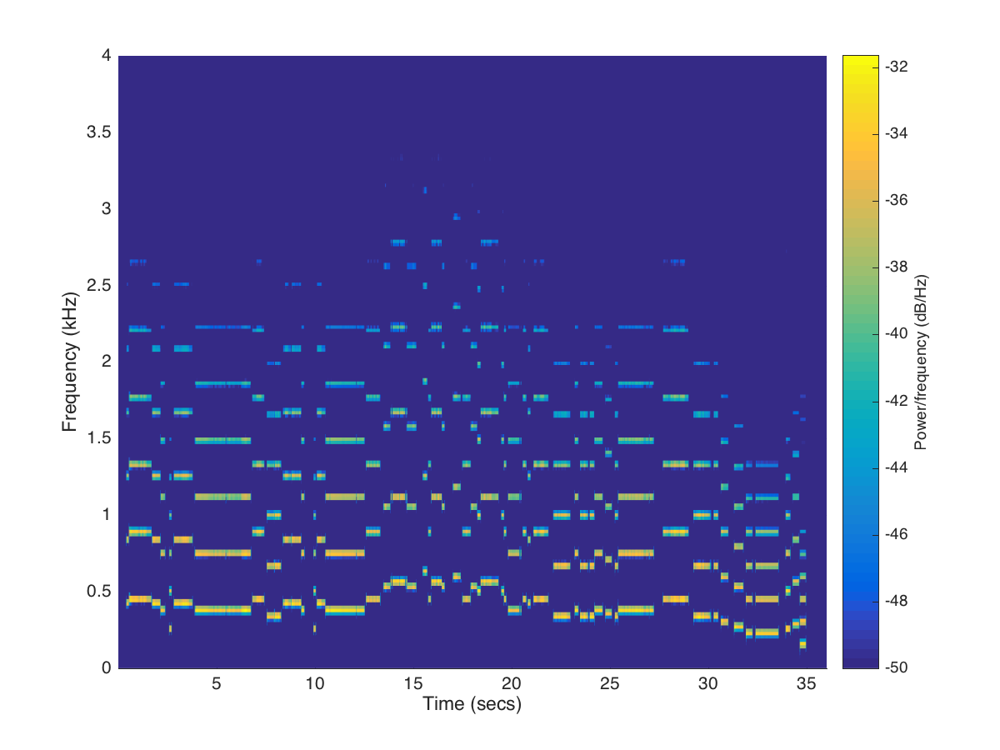

In this website, we present our example clips, for those whe are interested in the result of our works.
Click the sidebar on the left can help you move to a specific example.
Firefox / Google chrome is recommended when browsing this site
All clips used in this website are for academic purpose only
In this section, we briefly show some image/spectrum to help understand our works more clearly.
